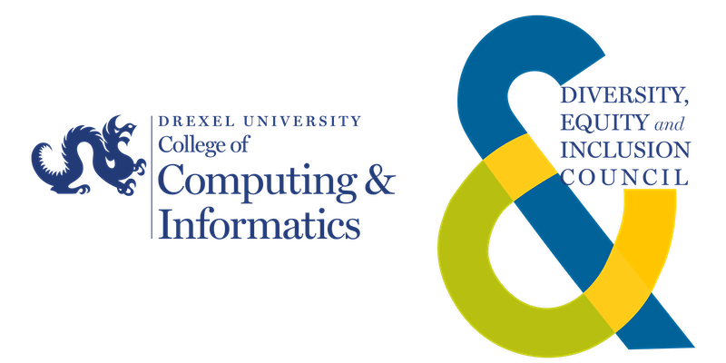

Dear CCI Students,
Drexel CCI's Diversity, Equity & Inclusion Council is excited to share that we have launched an initiative offering the opportunity for faculty and professional staff to add pronouns to their website profiles - one of many steps towards fostering an inclusive community - in observance of International Pronouns Day (today, October 20, 2021). Referring to people by the pronouns they determine for themselves is basic to human dignity. Together, we can transform society to celebrate people’s multiple, intersecting identities.
Watch a video of Drexel CCI student and Diversity, Equity & Inclusion Council member Charlie Stuart (he/they) to learn more about the importance of pronouns, what they are and how you can implement them into your daily life.
October is LGBTQ+ History Month, an annual month-long observance dedicated to honoring the great figures who fought for change and paved the way. We encourage you to learn more about the rich history online and check out events happening near you. Learning and acknowledging history allows us to create a better future. To get started, check out the history of the pride flag here and explore some of the resources around Drexel and our Philly community:
Learn More About CCI's DEI Council
Email sent to the Drexel CCI Student Body on 10/20/2021